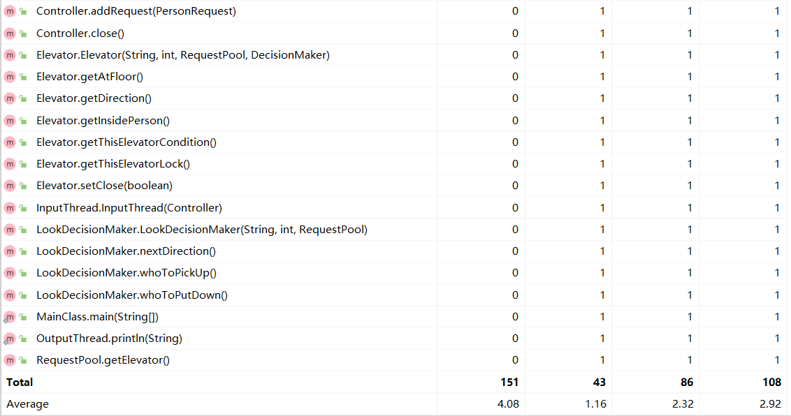
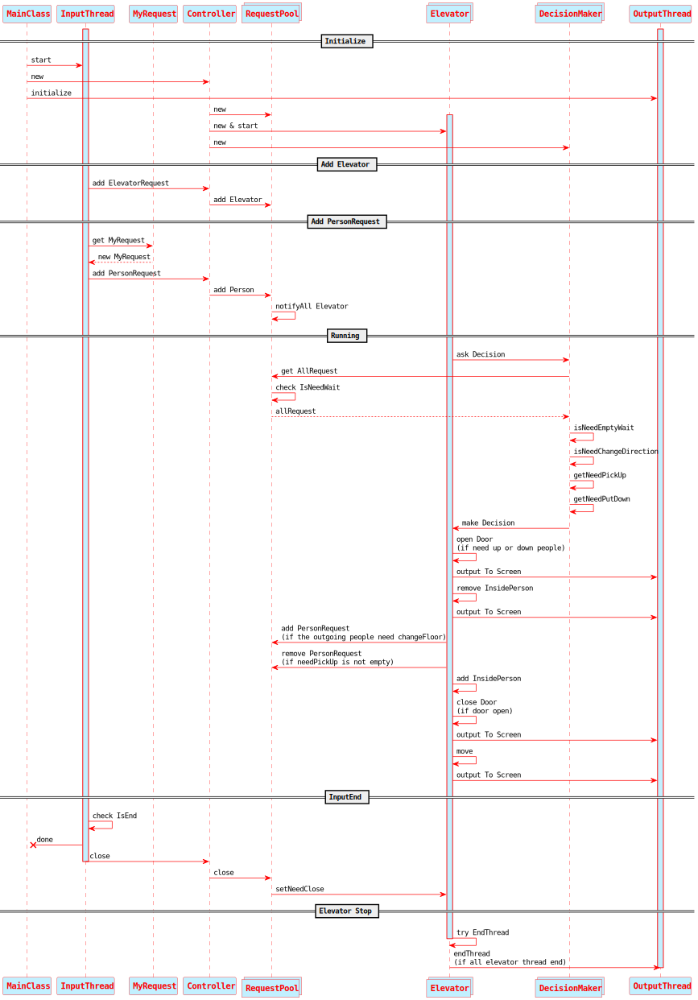

OO第二单元总结
要求
第一次作业总结
分析
在本单元我们的任务为设计并实现一个多线程电梯，并且构造策略实现接送乘客于出发地和目的地
本单元为多线程的应用，对每一个有可能线程不安全的变量或者方法，都要通过加锁构造为
线程安全使用
生产者-消费者模式，与乘客-电梯相对应使用
策略类—电梯类分离模式，让电梯的运行与策略分离，并且电梯作为线程类，在其自身的run方法中保证输出的正确性应用工厂模式，电梯捎带策略类均实现
DecisionMaker接口，以实现在策略之间的转换
基本思路
输入：乘客输入经过
InputThread类进入请求池，由于请求进入请求池的前后顺序无要求，并且请求之间互不影响，因此此过程并不会产生线程安全问题输出：电梯或乘客在执行动作的时候需要调用
OutputThread类的一个 静态的 加锁的 方法来输出，因为官方所给的输出包是线程不安全的，在同时调用的时候会由于线程的冲突而导致输出时间戳 有可能不递增 ，所以需要在此类把官方输出方法加锁使其线程安全控制器：本程序的控制器起到开始时的建立请求池实例，建立所有电梯线程实例并开始线程，结束时的通知程序中止作用（并不起调度作用），相当于使程序开始和结束的控制者
策略：接受当前电梯的状态和请求池中的请求，然后对电梯返回一种 策略 （注意可能并不会真正执行），由于对每个电梯都有一个专门的策略类实例，所以这种一对一传输并不会产生线程安全问题
（LOOK算法）其思想如下：
如果电梯没人
如果没请求，则等待
如果有请求，沿原方向前进（原来是等待则沿另一个方向前进）
如果电梯有人
判断当前是否需要开门
如果不用开门，则沿原方向前进
虽然不知道原理是啥，但是学长都是这么用的（逃）
请求池操作：该类相当于
生产者-消费者模型中的托盘，由于该对象被多线程同时访问 / 修改，所以该类中的所有 修改请求池 的方法均应该加上同一个锁，以此来保证线程安全电梯：每一个电梯都是一个单独的线程，电梯之间互不干扰，电梯的行动完全由其对应的策略类决定，并且在其
run()方法中保证电梯的正确性，并且加入了回退机制以实现"电梯空等后接第一个人时可以实现一次跃迁节省一次电梯移动时间"以及"电梯的关门和移动未完成时，如果有新的客人请求可以直接让电梯受理"的功能程序结束：在
InputThread类判断到输入截止之后，输入线程终止，并且将调用控制器的close()方法，进而调用请求池的close()方法，请求池将所有电梯的isClose置位，并且唤醒所有线程，然后电梯在载完请求池中该栋以及当前在电梯中的所有客人后break出while(true)循环，电梯线程终止，所有电梯线程终止后，程序正常结束
具体实现
读入处理类
InputThread- 开启官方包的输入线程，获得输入的请求，并将每一个输入请求传递到
Controller类中 - 在官方包传出终止信号时，调用
Controller的close方法
- 开启官方包的输入线程，获得输入的请求，并将每一个输入请求传递到
输出处理类
OutputThread
- 用一个
synchronized的static方法，对官方给的线程不安全的输出方法TimableOutput.println()进行封装，使其成为线程安全的静态方法OutputThread.println()（即调用时不会出现时间戳不递增的情况）
- 用一个
控制器类
Controller- 创建请求池类（
RequestPool类）的实例 - 创建所有电梯线程（
Elevator类）并开始运行（处于可接客状态） - 为每一个电梯创建一个决策者实例
DecisionMaker - 在接收到读入处理类 （
InputThread类）的close请求后，调用请求池类（RequestPool类 ）的close方法通知其进入停止状态
- 创建请求池类（
请求池类
RequestPool
- 线程安全类，采用了
ReentrantLock锁，所有对请求池读 / 写的方法均上锁，以保证线程安全 - 实现向请求池添加请求
addRequest，从请求池删除（获得）请求removeRequest，查询当前请求池中所有请求getAllRequest - 储存所有的电梯信息
- 在添加请求时，唤醒 所有 电梯中正在
await的线程，达到实时判断乘客的效果 - 控制器（
Controller类）传入关闭方法时，将本类的isClose置1，并且将 所有 电梯的isClose置1
- 线程安全类，采用了
电梯类
Elevator
- 重写
run()方法，实现顺序执行下客->上客->关门->运行一层的流程，其中每一步均有是否执行的判断条件，只有满足条件才会执行，顺序执行保证了电梯的正确性 - 每次下客前和关门前均调用自身对应的决策类的
ask方法，使决策类根据此时电梯状态和请求池状态更新自身行为，然后访问决策类的方法获得电梯下一步的行动 建议 （接那些人以及向哪一层移动/空等） - 关门和移动等待时间为电梯上一次 任意 操作（
开门/关门/移动）的系统时间与此时系统时间的差值（保证电梯距上次输出400ms即可）
- 重写
决策类接口
DecisionMaker

易错点：
- 死锁
- 轮询
- 超载
- 超时
- ……
基于度量的程序结构分析
总UML类图

代码规模分析
方法复杂度分析
类复杂度分析
第二次作业总结
分析
本次作业在第一次的基础之上增加了横向电梯以及同楼层/楼座的多台电梯的需求
本单元虽然新增横向电梯，但是在本单元的要求中不会同时出现跨楼层/跨楼座的请求，即乘客与第一次作业一样只需乘坐一趟电梯就可以到达目的地，因此，横向电梯在本单元中与纵向电梯本质上是一样的
根据第一次作业留下的可拓展接口进行迭代开发
需求变更
新增内容:
横向电梯（环形电梯）：
- 新增楼座与楼座之间移动的环形电梯，每个楼层可以对应多台环形电梯，可以在 $A\rightarrow B \rightarrow C \rightarrow D \rightarrow E \rightarrow A$ 或者 $A\rightarrow E \rightarrow D \rightarrow C \rightarrow B \rightarrow A$ 所组成的回路之间运行，例如，位于$A$ 座 $2$ 楼的横向电梯可以直接运行到 $B$ 座 $2$ 楼 $/$ $E$ 座 $2$ 楼
纵向乘客请求
- 可以输入相同楼层但是不同楼座的乘客请求
动态增加电梯
- 可以输入新增电梯指令，在对应楼座/楼层加入一台电梯
数据限制变更:
乘客请求：
- 单楼座输入 $\rightarrow$ 输入保证 [起点座 == 终点座] + [起点层 == 终点层] == 1，即 楼座和楼层两者中有且仅有一个相同 ，换言之，乘客一次只能在同一层楼或者同一座楼移动，从 A 座 1 层到 C 座 3 层是不被允许的（本次作业中）
电梯移动速度：
- 横向电梯移动一座花费的时间：0.2s
迭代开发
新增：
电梯接口
Elevator由于本次作业新增了一种电梯（横向电梯），横向电梯与纵向电梯本质上都是一种电梯，只不过在一些具体的方法和行为上有所区别，因此可以让这两种电梯实现一个公共的电梯接口，实现了面向对象思维
接口方法：
getAtFloor，getDirection，getAtBuilding，getInsidePerson： 获得电梯该时刻状态信息的方法getThisElevatorLock，getThisElevatorCondition： 获取电梯方法Lock以及对应Condition的方法setClose： 线程需要关闭的标志位，该位置高则代表此电梯可以终止自身线程
横向电梯类
FloorElevator
- 实现
Elevator接口，继承Thread类，内部实现逻辑大体与横向电梯显示，对外方法也基本相同，重写的run方法亦封装了顺序执行下客->上客->关门->运行一层的流程，只是从所处楼层：1 ~ 10转变为了所处楼座：A ~ E，
- 实现
横向电梯策略类
LookFloorDecisionMaker该类为横向电梯的根据
LOOK算法修改的适用于横向电梯的算法修改内容：
空等条件： 该楼层无乘客请求
转向条件： 电梯内部人数为零，该楼层电梯运行方向（顺时针 / 逆时针）上的下两座楼没有乘客请求，且本楼座没有该运行方向上的请求，则转向
接人条件： 接取电梯当前楼座的 所有 横向运动请求
下客条件： 所有到达楼座为当前楼座的请求
乘客请求类（重写）
MyRequest
- 相当于重写了官方
PersonRequest类中的所有对外接口，并且新增了一个构造方法，以支持在程序内部而非标准输入中的乘客请求的添加
- 相当于重写了官方
修改：
纵向电梯类
BuildingElevator线程终止条件变更，适用于当前输入和处理
增加操作内部人员（InsidePerson）锁，因为在本次迭代中有可能外部类要访问该电梯的内部人员信息，加锁以保证线程安全性
新增不包含上锁操作的添加请求和获取所有请求的方法
控制器类
Controller
- 新增添加电梯的处理方法
addElevatorRequest，判断是新增楼座电梯还是新增楼层电梯并且调用自身的两个对应新增电梯方法：addFloorElevator和addBuildingElevator以加入不同类的电梯进入电梯池中
- 新增添加电梯的处理方法
纵向电梯策略类
LookBuildingDecisionMaker
- 优化：优先接取在电梯运行方向上距离当前楼层最远乘客
- 优化：在
1的优化条件下，优先接取同目的地乘客
- 优化：在
请求池类
RequestPool
新增
getAllFloorRequest方法以响应横向电梯的ask()方法，并且设定横向电梯的wait条件增加增加电梯和访问电梯方法
addElevators和getElevators，并且对电梯池进行加elevatorLock读写锁以避免线程不安全问题增加不加锁的从请求池添加$/$移除请求的方法
addNotLockedPersonRequest和removeNotLockedPersonRequest以便保证加锁的顺序，防止死锁问题的出现
基于度量的程序结构分析
总UML类图
代码规模分析
方法复杂度分析
类复杂度分析

第三次作业总结
分析
本次作业在第二次的基础之上增加了电梯的定制化以及同时跨楼层/跨楼座的乘客请求
本单元虽然新增的乘客请求是建立在上一次作业的横向电梯和上上次作业的纵向电梯的铺垫之上，需要修改代码以实现换乘功能；电梯定制化只需要在创建新电梯类的时候作为参数传入并固化为该电梯属性即可
根据前两次作业留下的可拓展接口进行迭代开发，架构大抵不变
需求变更
新增内容:
电梯定制化
- 电梯的最大载客量和在楼层$/$楼座间移动的速度根据新加电梯时所给的参数决定
乘客移动请求范围扩大
- 可以输入相同楼层但是不同楼座的乘客请求
新增横向电梯可停靠楼层
- 可停靠楼层信息为 $\text{M}$
- 若满足
((M >> (X-'A')) & 1) == 1，则代表该电梯在楼座 $X$ 可开关门。$(X \in [A,B,C,D,E])$ - 输入保证 $\sum_{i=0}^4 ((M >> i)\ \&\ 1) \ge 2$，即至少有两个可到达楼座。
- 输入同时保证 $1 \lt M \lt 32$，即不包含无意义的二进制位。
数据限制变更:
乘客请求：
- 输入保证 $[$起点座 $==$ 终点座$] + [$起点层 $==$ 终点层$ ] $\not=$ 2$，即楼座和楼层不会同时相同。
电梯移动速度：
- 纵向电梯$/$横向电梯移动一层花费的时间： $[0.2, 0.4, 0.6]$
- 纵向电梯$/$横向电梯最大载客量： $[4,6,8]$
迭代开发
新增：
- 本次迭代无新增，代码架构设计良好
修改：
纵向电梯$/$横向电梯类
BuildingElevator / FloorElevator线程结束条件变更
当乘客离开电梯时，若其未达目的地，则创建一个新请求，把当前楼座$/$楼层视为起始信息，把原请求的目的楼座视为终点信息，并把该新请求重新投入请求池中
控制器类
Controller- 当接受到新加电梯请求时，访问请求池的
addElevatorRequest类
- 当接受到新加电梯请求时，访问请求池的
纵向电梯策略类
LookBuildingDecisionMaker- 更改处理乘客请求： 若某乘客请求需要换乘（即起始楼层不等于目标楼层且起始楼座不等于目标楼座），则将其换乘楼层视作其目的楼层
横向电梯策略类
LookFloorDecisionMaker- 更改处理乘客请求： 只有当乘客换乘楼层为电梯所在楼层并且乘客请求的起点楼座和终点楼座该电梯均可达的时候该电梯才会尝试处理该乘客请求
乘客请求类（重写）
MyRequest- 新增每个乘客请求唯一对应的换乘楼层
changeFloor信息，初始均置为1，并且新增对乘客请求的换乘楼层的Setter和Getter方法
- 新增每个乘客请求唯一对应的换乘楼层
请求池类
RequestPool新增更新（重新计算）乘客换乘楼层方法
getChangeFloor，该方法会按照基准策略计算所有满足((M >> (P -'A')) & 1) + ((M >> (Q -'A')) & 1) == 2且使 $|X-m| + |Y-m|$ 最小的电梯及对应 $m$（初始值为当前换乘楼座，遍历所有电梯，若 $|X-m| + |Y-m|$ 更小则更新换乘楼层）每一次添加乘客请求
addPersonRequest之前 ，更新乘客的换乘楼层信息每一次添加电梯请求
addElevators之后 ，更新所有还在请求池中（未被电梯接走）的乘客请求的换乘楼层横向$/$纵向电梯线程
wait条件更改
基于度量的程序结构分析
总UML类图
代码规模分析
方法复杂度分析
类复杂度分析
时序图

总结分析三次作业中同步块的设置和锁的选择，并分析锁与同步块中处理语句直接的关系
在最后一次迭代过后，本程序一共有
5个锁，分别是电梯操作锁
thisElevatorLock，采用ReentrantLock加锁，并配备对应的Condition对象thisElevatorCondition，其作用为同步本电梯操作（接客、下客、开门、关门、移动）电梯内部人员的锁
thisInsidePersonLock， 采用ReentrantLock加锁，作用为同步对电梯内部人员的操作（增加、删减、查询）请求池类方法锁
lock，采用ReentrantLock加锁，作用为同步对请求池中请求的操作（增加、删减、查询）请求池电梯表读写锁
rwElevatorLock，采用ReadWriteLock加锁，读锁作用为同步查询电梯操作，写锁作用为同步电梯表的增删操作输出锁
outputLock，采用ReentrantLock加锁，作用为同步所有的带时间戳的输出操作（防止输出时间戳非递增）
防止死锁：
- 固定加多个锁方法的锁顺序：
lock$\rightarrow$rwElevatorLock$\rightarrow$thisElevatorLock$\rightarrow$thisInsidePersonLock$\rightarrow$outputLock
- 固定加多个锁方法的锁顺序：
总结分析三次作业中的调度器设计，并分析调度器如何与程序中的线程进行交互
- 无调度器。（自由竞争 yyds ）
从功能设计与性能设计的平衡方面，分析和总结自己第三次作业架构设计的可扩展性
可扩展性
六大设计原则（SOLID原则）分析
Single Responsibility Principle：单一职责原则
- 每一个类均拥有其专属的不可替代的功能实现
Open Closed Principle：开闭原则
- 第一次作业时未想到会添加电梯，其余迭代均较好遵循开闭原则
Liskov Substitution Principle：里氏替换原则
- 两个接口下的派生类均满足此原则
Law of Demeter：迪米特法则
- 在第三次迭代时由于前面未留好访问所有乘客（包括电梯中的）的接口和规划导致该版本迭代严重违反了此法则
Interface Segregation Principle：接口隔离原则
- 接口设计都尽量精简
Dependence Inversion Principle：依赖倒置原则
- 层次化设计实现较佳
评价
- 在第一次作业之时就大致思考好了三次迭代的可能性，所以代码架构始终未作修改，较好符合了增量开发的思想，再次深刻体会到了一个具有优良拓展性的代码的迭代开发的优势
分析自己程序的 bug
本人三次作业强测及互测结果如图：
第一次作业：
第二次作业：
第三次作业：
总共被找出的
bug(同质 bug ) 数：1个分别为：
由于线程安全问题导致有几率线程在关门方法未执行时终止
*\(๑• ₃ •๑)
何指导的超 nb 的评测机帮我测 bug ！要不然我强测不会有这样滴分数和三次互测只有 1 个点被 hack ！
ヽ(￣ω￣(￣ω￣〃)ゝ
分析自己发现别人程序 bug 所采用的策略
根据互测数据规定撰写
python程序生成覆盖性测试数据对他人程序随机生成数据来进行黑盒测试测试有效性： 较佳，互测基本能覆盖所有人被找出的bug
是否结合被测程序的代码设计结构来设计测试用例： 否
心得体会
本单元是多线程电梯请求处理展开的从简到难的三次迭代过程，在这三次作业之中我熟悉并初步掌握了 JAVA 设计结构中的 生产者-消费者模式 和 观察者模式，熟悉了线程的使用方式，掌握了初步设计，实现以及调试多线程程序的能力，建立了多线程程序中的线程安全观念和同步观念，由于程序在迭代过程之中结构和方法变得越来越多且复杂，我也亲身经历了多种多线程程序中常见的错误，了解到了加锁逻辑合理性的重要性，让我受益匪浅
by Tan